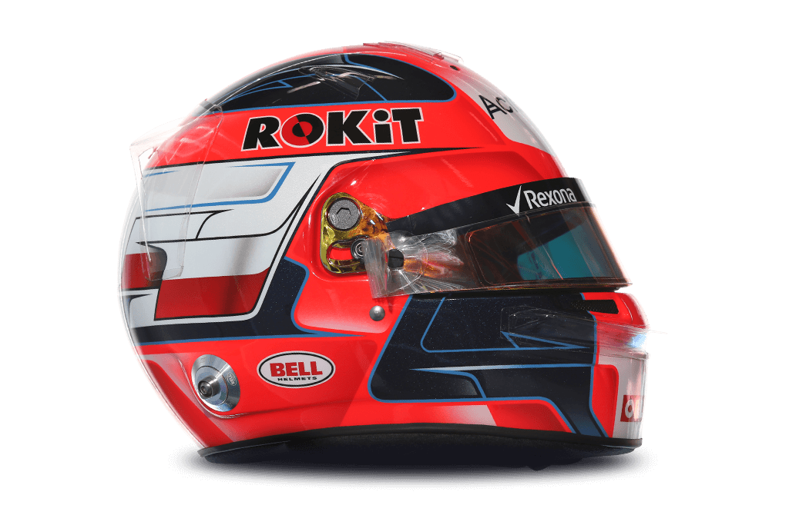

88
Robert Kubica

| Team | Williams |
| Country | Poland |
| Podiums | 12 |
| Points | 273 |
| Grands Prix entered | 78 |
| World Championships | N/A |
| Highest race finish | 1 (x1) |
| Highest grid position | 1 |
| Date of birth | 07/12/1984 |
| Place of birth | Krakow, Poland |
Biography
The Pole with the racer’s soul is back.
It is eight years since Robert Kubica – once rated as a future F1 world champion – suffered multiple injuries in a rallying crash and his hopes of fulfilling that potential faded. His return for Williams, in 2019, ranks among the sport’s most inspiring and unlikely comebacks.
The fact that Kubica himself never gave up hope illuminates the unshakable determination that also drives him on track. Kubica is a racer’s racer. His commitment to competition all consuming – that’s why he went to race rally cars on his weekends off.
Poland’s first F1 driver had blistering natural speed and racing intelligence to rival his peers Lewis Hamilton and Fernando Alonso. But this is a new era for Kubica, who is now competing against next generation stars and old rivals that have gone on to greatness.
The question marks over his physical abilities have been ironed out with impressive pace and mileage in a rigorous rehabilitation programme with Williams - but wrinkles of doubt remain.
Only the full season ahead will tell if Kubica, still carrying the scars of his injuries, can hustle his way through the pack and perform his old trick of eking performance out of the car beyond its capabilities.
Kubica is a popular and down-to-earth driver who shies away from the spotlight. In the old days he enjoyed the odd game of poker with his on-track rivals. Now the F1 community waits to see just what hand fate has in store for him on his long-awaited return to the grid.